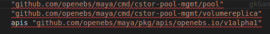
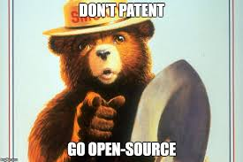

Minh Luan


Hôm trước, mình có gặp 1 project nhỏ viết bằng golang, hí hửng fork và clone về chạy thử . Nhưng đời không như mơ:

Tất cả relative import trong project đều bị lỗi. Nếu muốn sử dụng được, mình phải
đổi tất cả openebs/maya thành tên repo của mình luantranminh/maya. Rồi lỡ có phát hiện gì đó muốn pull request cho người ta thì sao 😨, bó tay. 😒 Lại phải sửa ngược lại.
Git cho phép ta sửa remote của local repo. Giờ ta sẽ biến cái repo vừa fork trên github của mình thành remote.
Ví dụ thằng có github user là luantranminh muốn cống hiến gì đó cho project https://github.com/openebs/maya:
Vào đó và fork nó về.
Chạy go get https://github.com/openebs/maya.
cd $GOPATH/src/github.com/openebs/maya.
Lúc này mình thêm repo trêm github của mình làm remote: git remote add luantranminh git@github.com:luantranminh/maya.git.
git fetch --all.
Tạo 1 branch mới để làm việc trên đó: git checkout -b fix/mybranch.
Commit và push code lên remote, lưu ý giờ mình sẽ không push lên origin nữa mà là luantranminh: git commit -m "Fixed bugs, Added more bugs to fix later" && git push luantranminh fix/mybranch.
Lên github tạo pull request và chuẩn bị trở thành contributor cho cộng đồng open source thoai.
